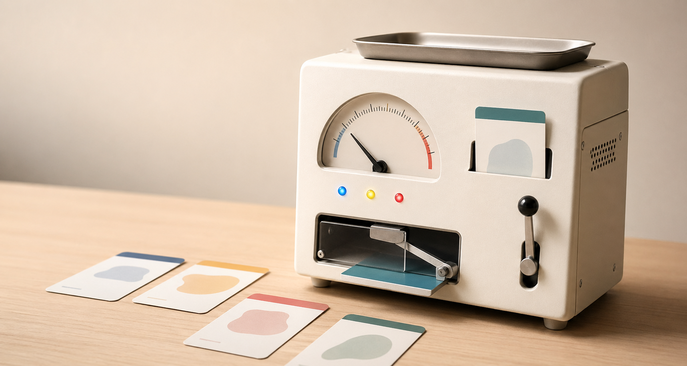

行動カードを選ぶ
「あと5分だけSNSを見る」「締切前だけど休憩する」
Negotiable UI Prototype / Desktop Instrument
AIが人間を判断する時代に、人間はAIへ異議申し立てできるのか。 いいわけ秤は、従うか無視するかの間にある 「交渉の余白」を、卓上の計器として物体化する。

01 / Problem
集中支援アプリ、習慣化アプリ、スマートホーム、ウェルビーイング支援。 AIやスマートデバイスは、私たちの状態を推定し、行動を促すだけでなく、 ときに止めるようになっている。
「今はやめた方がいい」
「そろそろ行動した方がいい」
「その選択は望ましくない」
問題は、AIが判断すること自体ではない。判断された側の人間が、 その判断にどう返答できるのかである。
02 / HCI Lineage
UIは、操作の道具であると同時に、ユーザーがシステムへ要求し、 修正し、異議申し立てするための足場でもあった。
Zero UIが消したのは、操作の手間だけではない。 ユーザーが異議申し立てするための足場でもある。
03 / Human Context
先延ばしや逸脱は、外から見れば失敗かもしれない。 しかし本人にとっては、その行動を選ぶだけの文脈がある。 下の理由カードを押すと、交渉ログに入る言葉が変わる。
AIの判断に従うか、無視するか。その二択だけではなく、 理由を返して交渉する余地が必要ではないか。
04 / Concept
いいわけ秤は、AIが止めた行動に対して、ユーザーが理由を提示して 交渉する装置である。必要のないときは静かに黙り、AIの判断と 人間の文脈がズレた瞬間だけ、理由を返すUIとして立ち上がる。
黄：10分だけ条件付き許可
05 / Experience
来場者は自分の行動と言い訳を選び、それがAIにどの程度通るかを見る。 「止められた人」ではなく、「理由を返せる人」になる体験である。
「あと5分だけSNSを見る」「締切前だけど休憩する」
赤：止まれ / 黄：条件付き / 青：通ってよい
「疲れている」「研究に必要」「今日だけ」「もう少しで終わる」
針が傾き、LEDが変わり、ゲートが開く / 半開き / 閉じる。
06 / Form
交渉とは、理由の重みづけである。同じ言葉でも、その重さは人、 状況、履歴によって変化する。
本当に限界のときの「疲れている」は重い。毎回何かを避けるための 「疲れている」は、だんだん軽くなるかもしれない。
07 / System
入力は行動カードと理由カード。Solist-AIが初期判定と理由の重み推定を行い、 針・LED・ゲートのリアルタイム制御へ返す。ノードを押すと実装メモが切り替わる。
08 / Interactive Demo
行動カードを選び、理由カードを載せ、猶予時間と審査モードを指定する。 結果は抽象的なスコアではなく、針、LED、ゲート、交渉ログとして返る。
09 / Why You?
私はこれまで、ストレス・先延ばし・行動変容を、単に「測定して管理する対象」 としてではなく、人がその瞬間にどう意味づけ、どう逸脱し、どう自分を納得させるのか という視点から扱ってきた。
私の関心は一貫して、AIやシステムが人間を正しく判定することではなく、 判定された人間がどう返答できるかにある。
「いいわけ秤」は、便利なAIガジェットではない。 “AIに判断された後の人間の余白”を、私の研究関心から最も分かりやすく物体化した作品である。
10 / Why Solist-AI™?
いいわけ秤が扱うのは、一般的な正解ではない。扱うのは、 その人だけの「理由の重さ」である。
同じ「疲れている」でも、本当に限界の日もあれば、逃げるための言葉になっている日もある。 その重さは、人・状況・履歴によって変わる。
巨大なAIで一般判定するのではなく、手元の小さなAIが、 使うたびにあなたの言い訳の重さを覚えていく。
11 / Solist-AI
この作品では、個人的な理由や逸脱の履歴を手元に閉じ、 その人ごとの交渉パターンを学習することが重要になる。
言い訳や逸脱の履歴をクラウドに送らず、手元で処理する。
理由カードの選択、操作パターン、交渉結果を学習し、重みづけを変化させる。
推論結果に応じて、針・LED・小型ゲートをリアルタイムに制御する。
Conclusion
いいわけ秤が作りたいのは、AIが人間をより強く管理する未来ではない。 普段は静かに環境へ溶け込み、ズレが生まれた瞬間だけ交渉の場を開く。 UIが消えた先に、もう一度、人間がシステムへ理由を返せる入口を作る。
AIに判断された人間が、もう一度自分の理由を返せる未来へ。